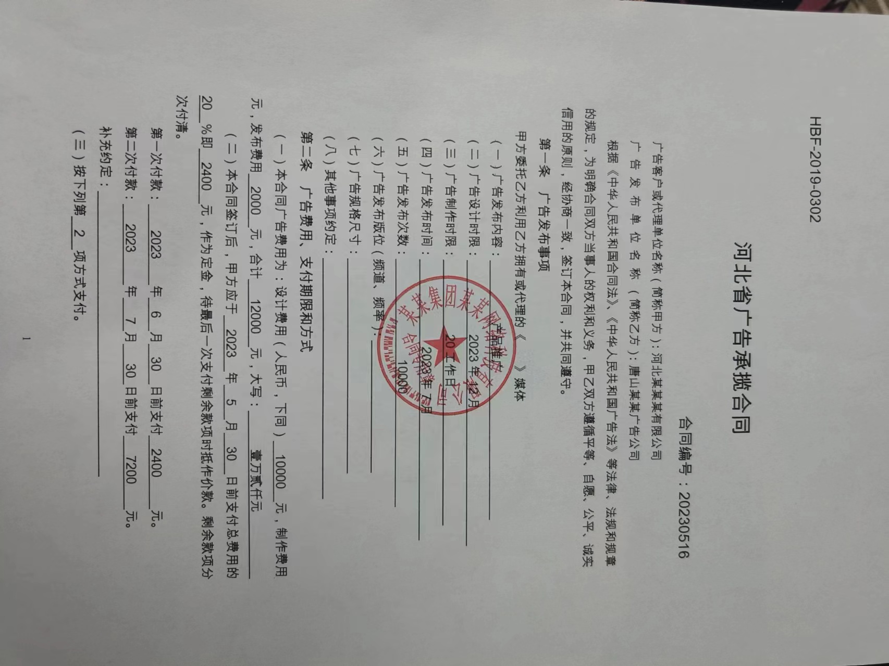
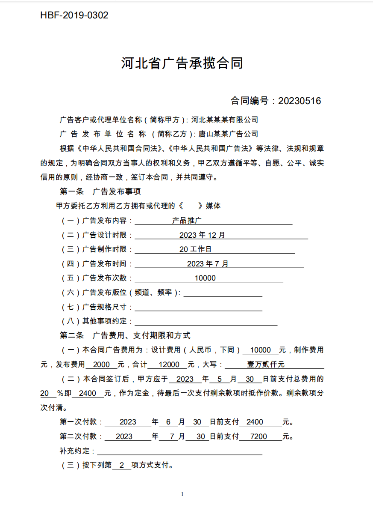
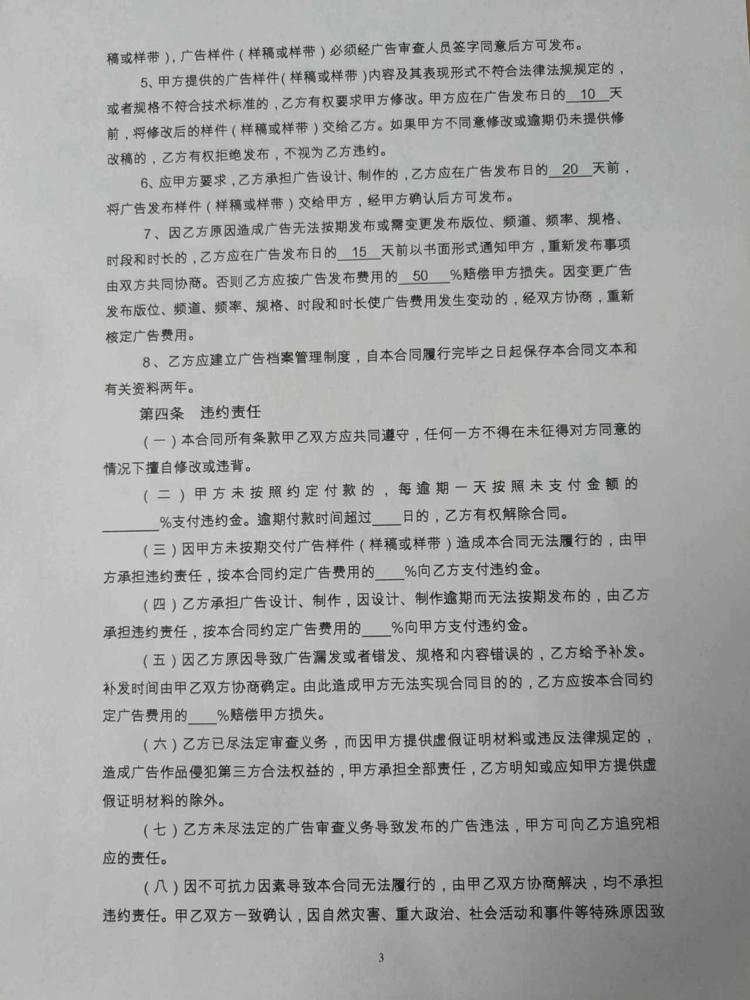
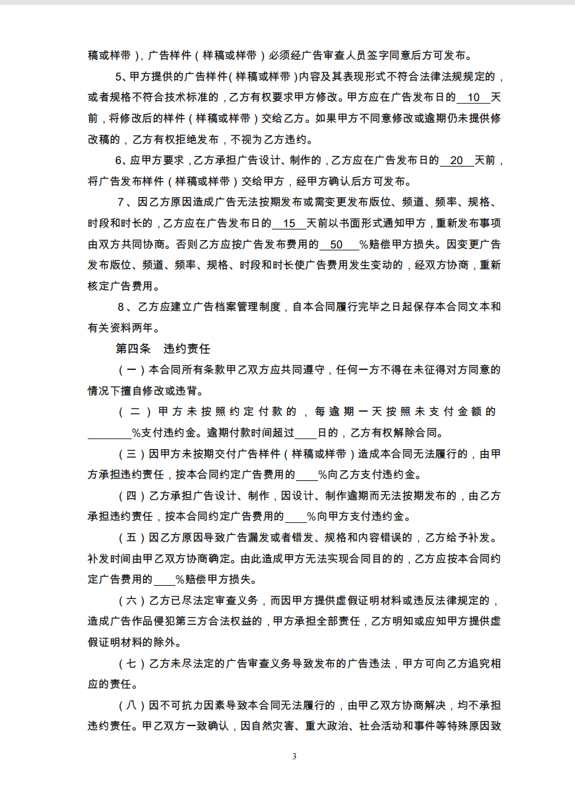
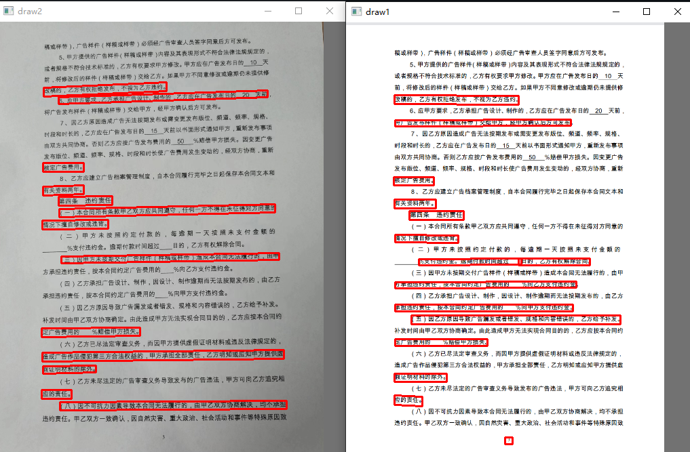
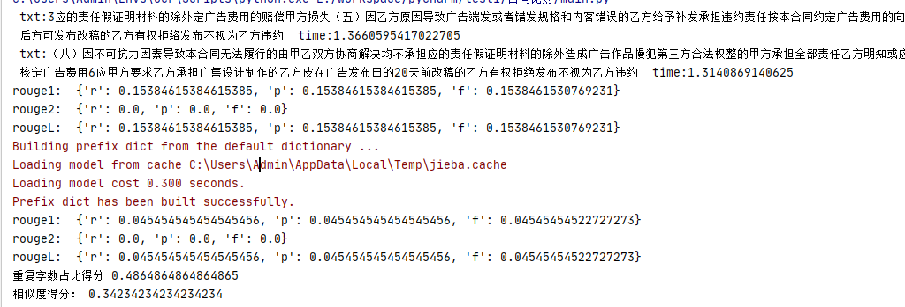

默认比对对象
path1 = 'test/pdf3.png'path2 = 'test/3.jpg'
静态展示 · 非在线推理
仓库 README 将项目写作 Comparison of General Chinese Contracts with OCR Pytorch。 实现是本地 Python / PyTorch 脚本，不是网页应用。本页只整理仓库里能核对到的问题、管线、样例与已发布截图。
What the repository actually compares
main.py 的默认入口不是交互式审阅工具。它读取两张合同页图像，各自做文本检测与识别，再对识别出的字符串做重叠与相似度计算，并用 OpenCV 弹出两张带检测框的图。
仓库 test/ 里能核验到的样例，是同一份《河北省广告承揽合同》的第 1 页与第 3 页：
.jpg 为纸面照片，.png 为更接近电子稿的渲染。默认要比对的路径写死为第 3 页的这两种成像。
path1 = 'test/pdf3.png'path2 = 'test/3.jpg'
rouge1 / rouge2 / rougeL、重复字数占比得分、相似度得分。本页不转写任何一次运行的数值。
Verified repository assets — not model outputs
以下四张图直接复制自仓库 test/，未经模型处理。红章、透视与底纹是原图就有的，不是后处理叠加。

test/1.jpg，1706×1280 JPEG。标题为河北省广告承揽合同，页脚为 1。图中有圆形红章压字。
test/pdf1.png，873×1193 PNG。版式与第 1 页照片对应，无印章、无拍摄阴影。
test/3.jpg，1280×1706 JPEG。可见条款 5–8 与「第四条 违约责任」。页脚为 3。
test/pdf3.png，923×1260 PNG。与第 3 页照片同一页次，作为默认 path1。Steps reconstructed from main.py, det/, rec/, and weights/
下列步骤只复述仓库里写明的调用顺序与配置，不是产品说明书。
infer_det_rec 用 cv2.imread 读入路径。检测前把短边缩放到不超过 640，再按 32 对齐补边，均值/方差均按 0.5 归一化。
DetModel：MobileNetV3（large，scale=0.5）+ RSEFPN（96 通道）+ DBHead。
权重文件名为 weights/ppv3_db.pth。推理时 DBHead 只返回收缩图。
DBPostProcess 默认 thresh=0.3、box_thresh=0.4、max_candidates=1000、unclip_ratio=2。
通过分数阈值的框交给 get_rotate_crop_image 做透视裁切。
draw_bbox 用红色折线把框画回原图。这些红框是检测框，源码没有把它们标成条款差异。
裁切图缩到高 48、宽按 32 补齐。
RecModel：MobileNetV1Enhance（scale=0.5）+ Multi 头里的 SVTR CTC。
n_class=6625。权重为 weights/ppv3_rec.pth。
字典为 weights/ppocr_keys_v1.txt（CTC 空白符另计）。
CTCLabelConverter.decode 去掉空白与相邻重复索引。
拼成整段 result 时会去掉大量中英文标点；按框保存的 results 列表保留解码原文。
get_rouge_socre 对两份按框文本列表调用 rouge。
get_rouge_socre2 对去标点后的整段做 jieba.cut 再算 ROUGE。
get_same_numbers 用第一段字符建字典，再扫第二段，返回字典长度，再按
值 * 2 / (len(text1) + len(text2)) 打印「重复字数占比得分」。
get_like_score 是 difflib.SequenceMatcher.ratio()，打印「相似度得分」。
最后 cv2.imshow("draw1" / "draw2")。
README-published screenshots — generated outputs, not inputs
README 的 Example 节有两张 GitHub 用户资源图。本页在可访问时已另存副本，避免外链过期。
它们是作者发布的运行截图，不是 test/ 原图，也不是本页现场跑出来的。

draw2 / draw1 与 main.py 的
cv2.imshow 一致。左侧更像 test/3.jpg 的照片，右侧更像 test/pdf3.png 的电子稿。
红框由 draw_bbox 画出，表示文本检测区域。该截图里两路框的疏密并不相同；仓库没有解释原因，也没有把它写成评价指标。

jieba 载入，以及 ROUGE 分项、「重复字数占比得分」「相似度得分」。
这些数字只对应该次本地运行。仓库没有评测协议，本页不摘录、不平均、不宣传任何分数。
infer_rec 打印的 txt 与 time。仓库没有给出可引用的耗时统计。Only constraints visible in the repository
检测与识别依赖 PyTorch 权重和 OpenCV。GitHub Pages 只托管这套静态 HTML。
路径写在 __main__ 里。结束时调用 cv2.imshow 与 cv2.waitKey，无桌面界面时看不到那两张检测图。
没有条款对齐、没有法律审阅视图。去标点后的整段与按框列表会走进不同的计分函数。
仓库未提供评测集、未声明准确率、未描述客户或生产部署。README 截图里的分数不能当成项目指标。
get_same_numbers 并不提取数字；它返回以第一段字符为键的字典长度。打印名「重复字数占比得分」也没有独立定义文档。
get_det_model 与 get_rec_model 在推理路径里 torch.load。这是源码结构，不是测出来的性能结论。
Quoted from README, plus filenames the code actually opens
README 原文如下（拼写保持原样）：
1.pip isntall -r requirements.txt
2.pyhton main.py
实际还会读取 weights/ppv3_db.pth、weights/ppv3_rec.pth、
weights/ppocr_keys_v1.txt，以及上面的 test/pdf3.png 与 test/3.jpg。
静态站没有发布这些权重。